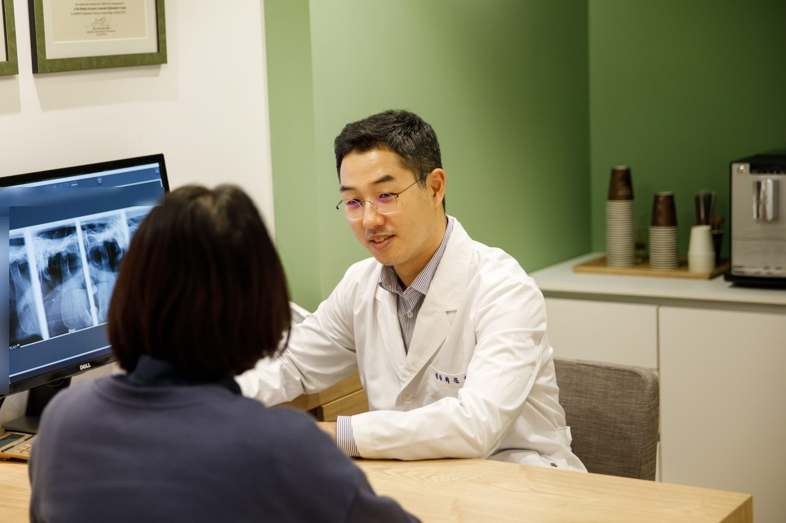

턱에서 딱딱 소리가 나는데 치료해야 하나요?
소리만 나고 아프지 않다면 대부분 지켜봐도 됩니다. 다만 통증이 있거나 입이 잘 안 벌어지고 턱이 걸린다면 확인이 필요합니다.
환자분들이 실제로 물어보시는 것들만 모았습니다. 더 알고 싶으신 분은 아래 링크에서 이어 읽으실 수 있습니다.

소리만 나고 아프지 않다면 대부분 지켜봐도 됩니다. 다만 통증이 있거나 입이 잘 안 벌어지고 턱이 걸린다면 확인이 필요합니다.
손가락 세 개가 세로로 들어가지 않으면 확인이 필요합니다. 특히 갑자기 줄었다면 일찍 보시는 게 좋습니다.
가능합니다. 씹는 근육과 귓속 근육은 같은 신경을 씁니다. 다만 귀 진료가 먼저이니, 이비인후과에서 원인을 찾지 못하셨을 때 확인해 보세요.
턱 근육과 목·어깨 근육이 같은 신경망에 묶여 있어 그럴 수 있습니다. 여러 곳에서 치료해도 되돌아온다면 턱을 함께 살펴보세요.
네. 씹는 근육이 관자놀이까지 이어져 있어, 이를 악무는 습관이 오래되면 관자놀이 쪽 두통으로 나타나기도 합니다.
통증이 오래되면 주의와 감정을 조절하는 뇌 영역도 함께 자극을 받습니다. 예민해서 아픈 것이 아니라, 오래 아파서 예민해지는 쪽에 가깝습니다.
자는 동안 이를 악물거나 갈고 있을 가능성이 큽니다. 본인은 모르는 경우가 대부분이고, 아침에 가장 뻐근한 것이 특징입니다.
한쪽만 계속 쓰면 그쪽 관절과 근육에 부담이 쌓입니다. 다만 반대쪽이 불편해서 그렇게 된 경우도 많아 원인을 함께 봅니다.